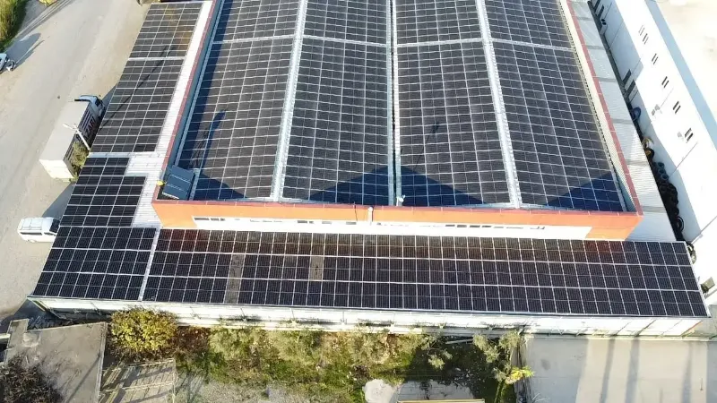
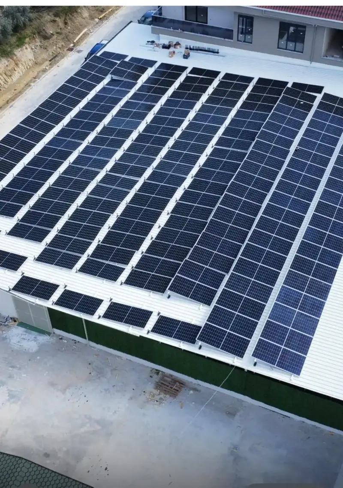
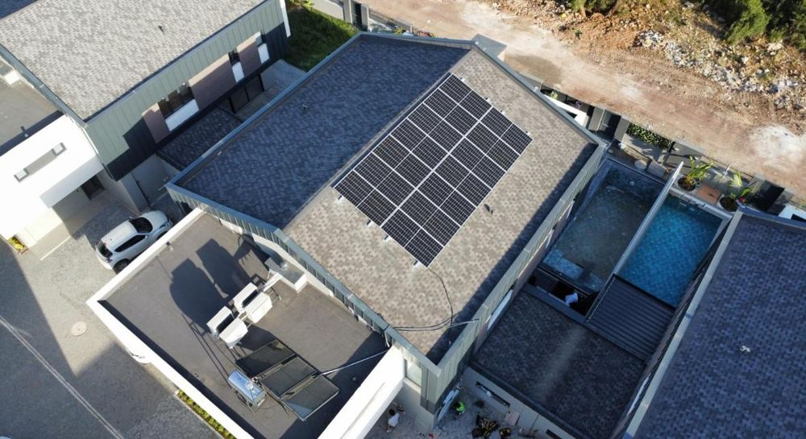
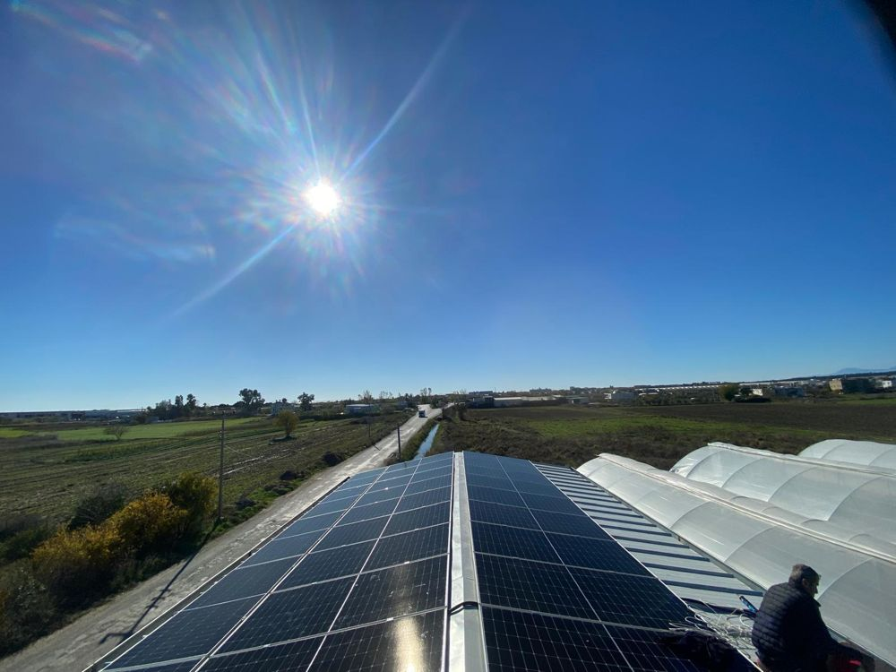
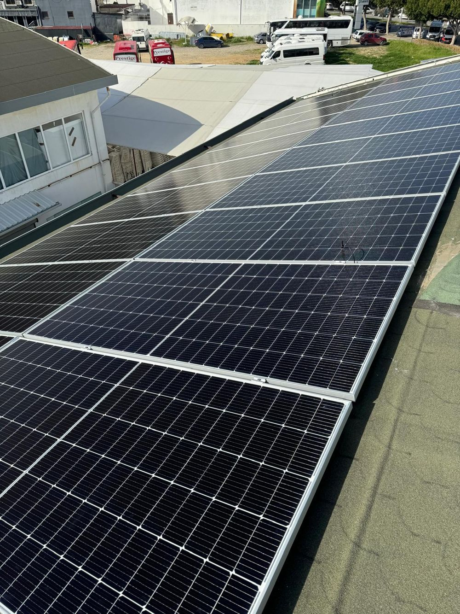
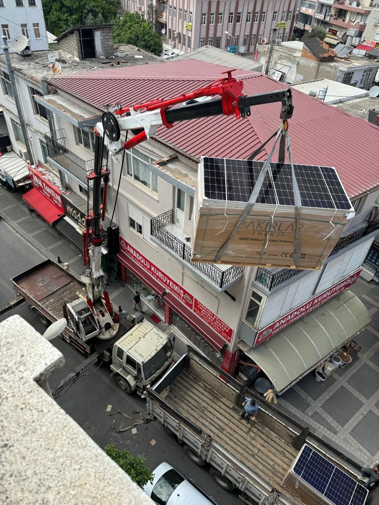
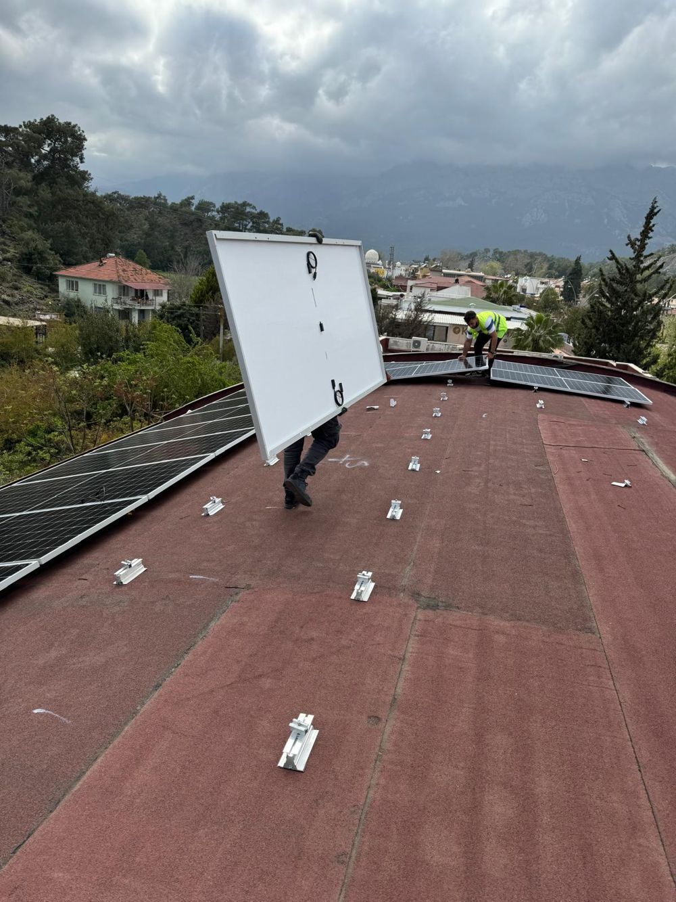
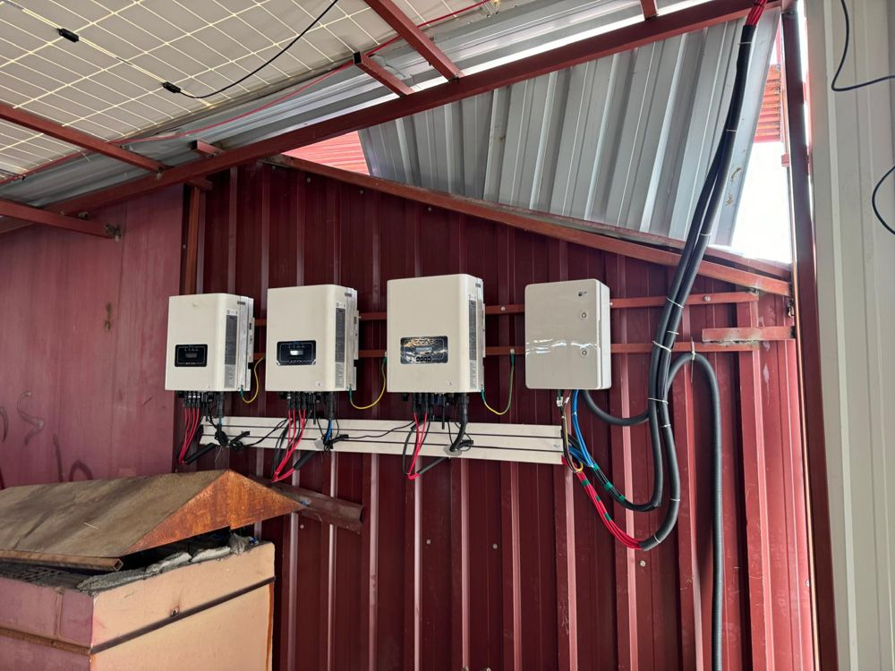
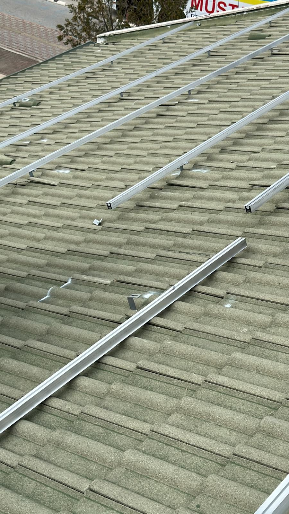
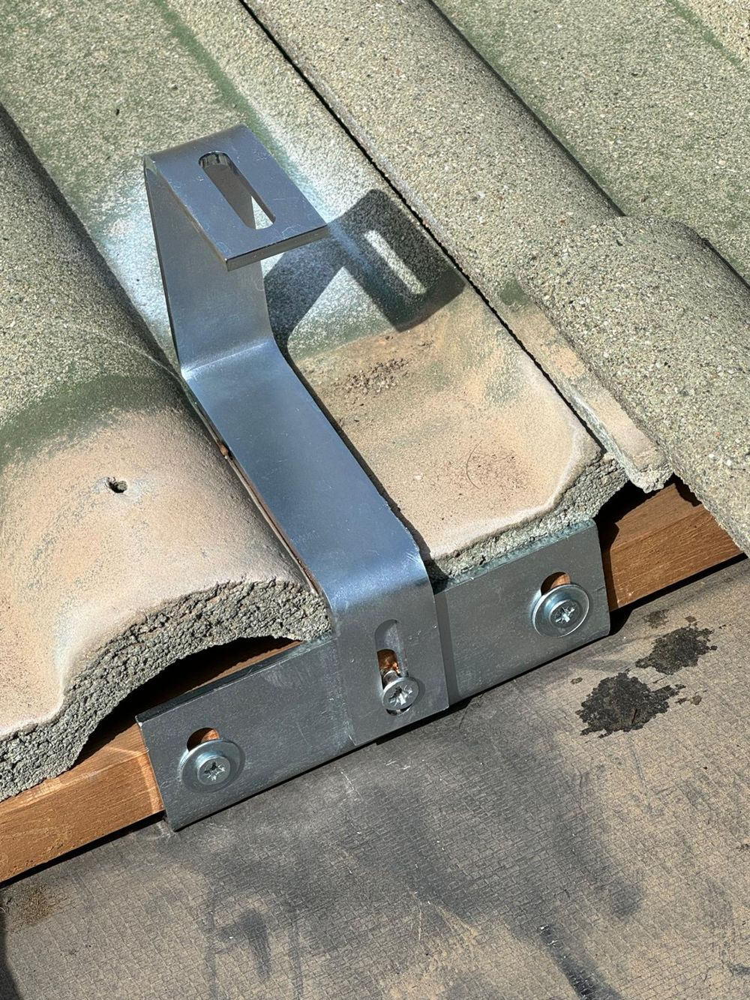

Çatı ve Arazi GES Kurulumu
Evinizin, iş yerinizin ya da fabrikanızın çatısına; tarlanıza veya boş arazinize güneş enerjisi santrali kuruyoruz. Keşiften devreye almaya, bakımdan izlemeye kadar tek muhatap: GESPA Enerji.
- 500+Tamamlanan proje
- 15 MWBölgede kurulu güç
- 21 yılSektör deneyimi
Çatınız mı, araziniz mi?

🏠 Çatı GES
- Konut, iş yeri, otel ve fabrika çatıları
- Kiremit, sandviç panel ve beton çatıya uygun montaj
- Gündüz tüketiminizi doğrudan güneşten karşılar
- Çatı taşıma kapasitesi keşifte kontrol edilir

🌾 Arazi GES
- Tarla, sera ve boş araziler
- Tarımsal sulama ve büyük ölçekli üretim
- Zemine sabitlenen konstrüksiyonla kurulum
- Bağlantı ve izin süreci projeyle birlikte planlanır
4 adımda anahtar teslim GES
- 1
Keşif & Analiz
Saha incelemesi, tüketim analizi ve güneşlenme verisi.
- 2
Tasarım & Teklif
Üretim simülasyonu ve geri ödeme süresiyle net teklif.
- 3
Kurulum
Sertifikalı ekiplerle hızlı ve güvenli montaj.
- 4
Devreye Alma & İzleme
Şebeke bağlantısı ve sürekli performans takibi.
Kurduğumuz santrallerden örnekler
Çatı GESÇift eğimli kiremit çatılı villada şebeke bağlantılı konut sistemi.
 Çatı GES
Çatı GESBüyük çaplı fabrika çatısına kurulan güneş enerjisi santrali.

Çatı GESSanayi tesisi çatısına kurulan on-grid santral.

Çatı GESSanayi tesisinin çatısını kaplayan yüksek verimli kurulum.
 Tarımsal
TarımsalSera ve tarla sulaması için güneş enerjisi santrali.
Arazi GESZemine bağlı arazi tipi kurulum; sulama pompası için.
Santralini teslim aldığımız müşterilerimiz
Bu alana sizin göndereceğiniz 4–5 teslim fotoğrafı gelecek (müşterinin yayın izniyle).
Sahadan kareler
Kurulum ve mühendislik çalışmalarımızdan. Büyütmek için dokunun.








Çatınız ya da araziniz için ücretsiz keşif
Tüketiminizi ve alanınızı inceleyip size özel teklif hazırlayalım.